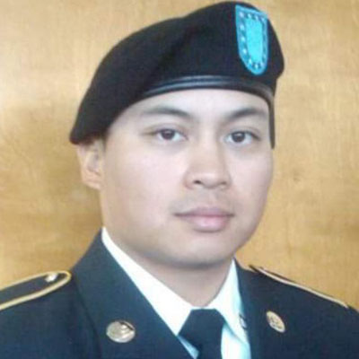

At Syc, our mission is to empower students within the USF Cybersecurity major, from freshmen to graduating seniors, for success in their academic and professional pursuits. Our innovative training platform combines theoretical knowledge with hands-on experiences, providing a dynamic learning ecosystem. Syc goes beyond traditional education, bridging the gap between academia and industry. We're dedicated to preparing students not only for their time at the College of USF but also for thriving careers in cybersecurity. We're creating a community where students empower each other and collectively shape the future of cybersecurity education. Together, we're building a launchpad for the cybersecurity leaders of tomorrow..
Seth Simonds
Hi! i'm Seth, I'm a senior studying Cybersecurity. I designed the main home page and the certifications page. Most of my information I wanted to provide was based off what I found I super needed in my job search. Hopefully some of it can help you too!
Steven Dawkins
Hey there! My name is Steven and I am currently a college senior majoring in Cybersecurity here at USF! I designed and wrote the Career page which is all about explaining how to prepare for heading into the professional world of cybersecurity!
Jonathan Cruz
Hello there! My name is Jonathan and I helped design the Cyber News page on the training platform. The goal for this page was to keep those interested in Cybersecurity up to date with the latest news and allow you the best knowledge on the industry!
Daniel Rojas
Hello Cyber students! I'm Daniel and I am a current senior studying Cybersecurity at the University of South Florida (USF). I designed the courses page and hope it will help you learn more about the Cybersecurity courses offered at USF and what to expect for each of them.